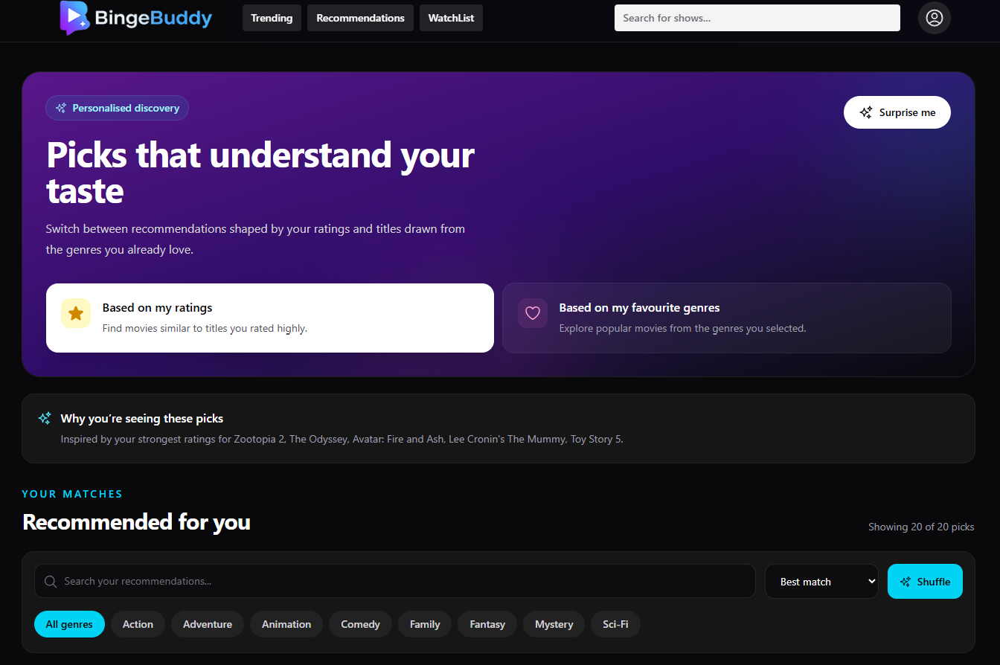
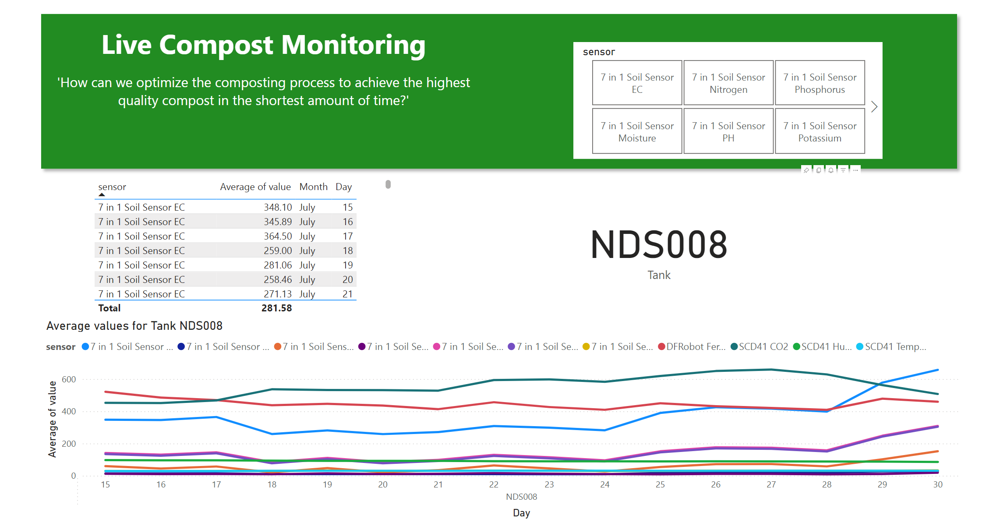
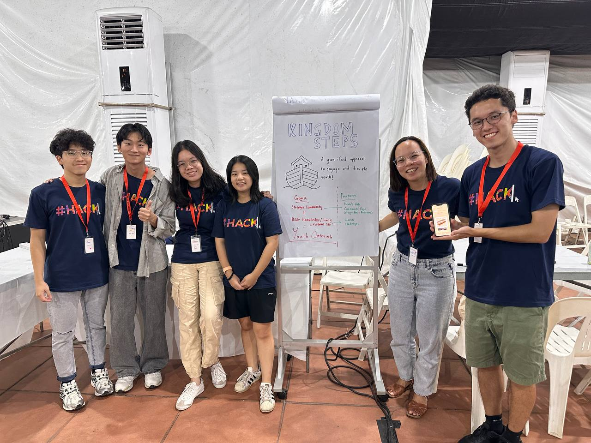

BingeBuddy
A personal movie-discovery workspace that shortens time-to-choice through guided onboarding, deep filters, transparent recommendations, and taste insights.
AI systems + product engineering
I’m Hannah, a Business AI Systems undergraduate in Singapore. I work across machine learning, full-stack development, and product thinking to turn messy problems into useful software.
Selected work
Five projects across recommendation systems, mobile product design, sustainability, analytics, and community technology.

A personal movie-discovery workspace that shortens time-to-choice through guided onboarding, deep filters, transparent recommendations, and taste insights.
A gamified productivity app that turns task completion into a rewarding pet-care loop designed to strengthen daily habits.

A compost operations hub that unifies live IoT monitoring, predictive models, field records, visual evidence, and AI-assisted decision support.
A cross-domain AI portfolio spanning prediction, segmentation, forecasting, language, vision, recommendation, and explainability.

A youth engagement and Bible study app shaped with Singapore Youth For Christ and Digital Wesley.
About
I’m most interested in the space where AI, software, and user needs meet.
My work ranges from recommendation engines and live data products to enterprise search workflows and community technology. Across those contexts, I’m passionate about turning emerging technologies into practical products, designing for real adoption, and understanding how technology can drive meaningful and lasting change.
I’m currently pursuing a Bachelor of Business AI Systems with Honours at the National University of Singapore, with a minor in Mathematics. Before NUS, I completed a Diploma in Data Science at Ngee Ann Polytechnic with a 3.88/4 cGPA.
Experience
Experience across enterprise technology, youth engagement, student leadership, and deployed products.
SAP
Developed production data ingestion and indexing workflows for internal documents, connected metadata with databases and enterprise search, and supported contract technology releases for global teams.
Singapore Youth For Christ
Planned youth programmes across Singapore’s polytechnics, maintained outreach relationships, and supported international volunteering and community initiatives.
National University of Singapore
Co-developed BingeBuddy and built a full-stack gym reservation platform for hall residents. As Secretary-Treasurer for OCIP Laos, I led operations, marketing, and finance for a 32-member volunteering team, raising almost US$30,000 through three fundraisers and securing 20 sponsorships and partnerships.
Capabilities
Python, scikit-learn, pandas, NumPy, predictive modelling, classification, regression, ensemble methods, clustering, anomaly detection, time-series forecasting, NLP, recommendation systems, computer vision, feature engineering, explainable AI, model evaluation
React, TypeScript, JavaScript, Django, FastAPI, Node.js, REST APIs, Android, Java, Kotlin, responsive interfaces
PostgreSQL, Supabase, Prisma ORM, Snowflake, dbt, SQL, ETL pipelines, data modelling, Power BI, Tableau
Stakeholder communication, global collaboration, project coordination, partnership building, community engagement
Get in touch
I’m open to internships, product and AI opportunities, and conversations with people working on useful technology.
hannah.jx.lim@gmail.com